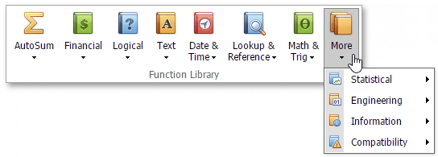

Supported Functions
The Spreadsheet supports the following functions that are used in formulas.
Mathematical Functions - used to perform common mathematical operations: addition (SUM), multiplication (PRODUCT), exponentiation (POWER), extraction of the square root (SQRT), evaluation of trigonometric functions (e.g., SIN, COS or TAN), etc.
Financial Functions - used to perform various types of financial operations: calculation of interest rates (RATE), calculation of interest payments (IPMT), etc.
Logical Functions - used to perform logical operations such as AND, OR, NOT, etc.
Text Functions - used to provide operations with text data in cells, such as string concatenation (CONCATENATE), replacement of one part of a string with another string (REPLACE), etc.
Date and Time Functions - used to work with dates: to calculate the number of days, months, or years between two dates (e.g., DATEIF or DAYS360), or to add various components of a specified time to a worksheet (e.g., SECOND, MINUTE or HOUR).
Lookup and Reference Functions - used for searching specific data in a worksheet: to look up values in vectors, arrays or references (e.g., LOOKUP or MATCH).
Statistical Functions - used for data analysis: to find the average of a list of values (AVERAGE), to evaluate the covariance between two data sets (COVAR), to find the smallest or the largest value in a list of arguments (MAX, MIN), etc.
Engineering Functions - used to work with special functions (e.g., BESSELI or BESSELJ), complex numbers (e.g., COMPLEX or IMAGINARY) and various numeral systems (e.g., DEC2BIN or BIN2DEC).
Information Functions - used to provide information about the formatting, location or content of cells (e.g., CELL, INFO or ISTEXT).
Compatibility Functions - replaced by new functions in Microsoft® Excel® versions 2010 and higher. These functions can be used to provide compatibility with earlier versions of Microsoft® Excel®.
All of the functions described above are available in the Function Library group within the Formulas tab.
